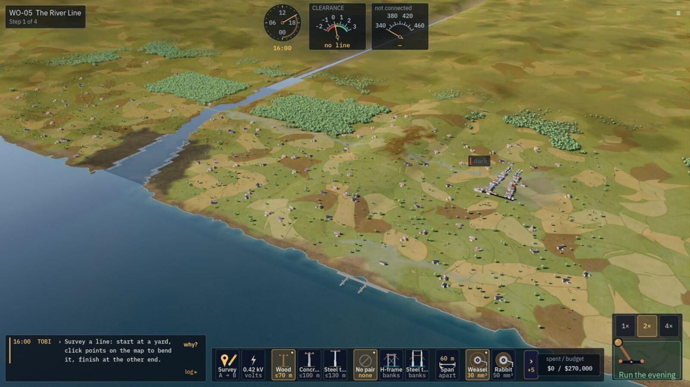

Wiki / Chapter 2 · Alternating Current, the Mainland
Chapter 2 · Alternating Current, the Mainland
What it teaches. AC lines on the Mainland: sag and clearance, pole spans, transformers at each end, salt on the insulators and a sea cable home.
5 jobs: WO-04 to WO-06, WO-29, WO-30. All of its jobs are drawn in the new 3D look.

New look. WO-05 The River Line in 3D: survey a route over the river and ridge, then string it. Farms, a bridge and the yard at each end
WO-04 Spin the Alternator New look
The Mainland · the waterfall powerhouse, 18:00
Goal
The village by the waterfall needs a generator. The water head turns the shaft at 500 rpm: wind the alternator for 230 V rms (a 325 V peak) at 50 Hz, with as little copper as you can.
Budget: $1,300.
Lamps: pass the job; spend at most $1,018; spend at most $784 and prediction within 1 %.
If it fails
The village got 16.67 Hz from 4 poles at 500 rpm; it needs 49.75 to 50.25 Hz. Clocks and fans run at the wrong speed.
That is the engine's own sentence for a first-try build that misses. Yours will name your numbers.
On the radio
ADA A waterfall, a Francis runner and no frequency meter. The shaft turns 500 times a minute whether you like it or not.
VANCE Copper is the bill. Wind it to make 230 V, not a coil of gold.
Coach steps (hints that show how to build)
The village wants 50 Hz and the water head fixes the shaft at 500 rpm. Frequency is f = poles × rpm ÷ 120. How many poles?Each pair of poles gives one cycle per turn of the shaft: 12 poles make 6 cycles a turn, and 500 rpm is 8⅓ turns a second, so 50 Hz. The hum you hear is at twice the frequency.
Now the voltage: e₀ = N × B × A × ω. The village needs 230 V rms, a peak of 230 × √2 = 325 V. Change the turns, the field or the coil area until the scope sits inside the green band.ω = 2πf is fixed once the frequency is right, so only N × B × A moves the voltage. Copper is in the turns and the coil size, and the field is free until the iron saturates.
Before you spin it: predict the peak voltage of your winding in volts, then check it against the scope.A prediction is a calculation you can check. Use e₀ = N × B × A × ω with ω = 2π × 50. Within 1 % earns the third lamp.
Open the sluice and run the evening.The village is checked every 15 minutes: frequency first, then voltage.
emfrms peakalternator frequency
WO-05 The River Line New look
The Mainland · Brightwater market, 16:00
Goal
Bring the waterfall's power to Brightwater market, 4 km east across the river and the ridge. Keep the market's voltage in band all evening, inside the budget.
Budget: $270,000.
Lamps: pass the job; spend at most $216,146; spend at most $152,770 and worst clearance ≥ 0.5 m.
If it fails
Homes were below the voltage limit for 15 minutes of the night.
That is the engine's own sentence for a first-try build that misses. Yours will name your numbers.
On the radio
ADA The island taught you copper. The mainland teaches you everything that holds the copper up.
VANCE Brightwater has a cold store and forty stalls. Every pole you plant is a pole I pay for.
Coach steps (hints that show how to build)
Survey a line: start at a yard, click points on the map to bend it, finish at the other end.Every bend needs a stronger angle pole, swamp poles need piles, rock needs anchors, and the river needs one long span from bank to bank.
At 0.42 kV the market draws about 300 A. What does a transformer at each end buy you?Turns ratio: 11 kV / 0.42 kV ≈ 26, so the line carries 1/26 of the current and loses ~1/690 of the heat.
An 11 kV line needs a transformer at each yard: up from 0.42 kV at the powerhouse, down again at the village. Pick a size from the tray; the market peaks near 220 kVA.A transformer is rated in kVA (volts × amps it can carry without overheating). Too small and it cooks at the peak; too big and you paid for iron you never use.
Pull the breaker and run the evening.The market peaks at 19:30, the hottest, heaviest hour: that is when a line sags lowest.
sag clearancesupportsstep up transmissiontransformers
WO-06 Exam Bridge: The Town Line New look
The Mainland · the town line, 18:00
Goal
Textbook mode: one phase, two wires, a resistive line, ideal transformers. The town takes 800 kW over a 15 km line of 0.5 Ω per km per wire. Predict the loss at the generator's 4000 V, then keep it to 2 % or less with the cheapest pair of transformers.
Budget: $84,000.
Lamps: pass the job; spend at most $72,251 and predictions within 5 %; spend at most $65,801 and prediction within 2 %.
If it fails
The line lost 600 kW, 75 % of what was sent (the limit is 2 %), and the town saw only 25 % of its voltage.
That is the engine's own sentence for a first-try build that misses. Yours will name your numbers.
On the radio
NIA This is the question that is on every exam. Same line, same copper: only the voltage changes.
ADA Predict first, then fix it. A guess you wrote down teaches more than one you only had.
Coach steps (hints that show how to build)
Textbook mode. 800 kW goes down a 15 km two-wire line, 0.5 Ω per km per wire, at the generator's 4000 V. Predict the line loss in kW.The line current is I = P ÷ V and the heat is I² × R, with R the whole loop: 2 × 15 km × 0.5 Ω/km. Within 2 % earns the third lamp.
Fit a step-up transformer at the powerhouse and its mirror at the town. Pick a turns ratio.V₁ ÷ V₂ = N₁ ÷ N₂. Ideal transformers keep the power, so raising the voltage lowers the current by the same ratio.
Still over 2 %. The loss goes with the square of the current: raise the line voltage further, but every extra volt costs insulation.Loss = (P ÷ V)² × R. Doubling the voltage quarters the loss.
The step-up carries all 800 kW, and this one is too small: pick a rating above 800 kVA.An ideal transformer passes all the power. Run past its rating it overheats, whatever the ratio.
Switch on and run the evening.The town line is checked every 15 minutes.
transmission losstransformer ratiotextbook mode
WO-29 Salt Wind New look
The Mainland · the harbour, 18:00
Goal
The harbour needs power all night: a fish market and an ice plant, 150 kW. Run 11 kV from Brightwater's yard down to the beach and step it down. Keep the ice plant on through the sea fog, inside the budget.
Budget: $55,000.
Lamps: pass the job; spend at most $49,555; spend at most $46,447 and every support by the sea ≥ 372 mm creepage.
If it fails
At 04:00 the sea fog rolled in. Pole 18 stands 25 m from the surf (class IV): it needs 372 mm of creepage and its insulator offers 320 mm. 5 supports flashed over and the line tripped.
That is the engine's own sentence for a first-try build that misses. Yours will name your numbers.
On the radio
ADA Year two. The line you built still hums. The sea does not care about it.
TOBI The fog comes in about four. Salt on a wet insulator is a wire laid on the outside of it.
VANCE The ice plant loses a night of fish if the power drops. And every disc you hang is a disc I pay for.
Coach steps (hints that show how to build)
Survey a line from Brightwater's yard down to the harbour yard on the beach. The town in the way cannot be crossed overhead: go around it.The harbour is a town too, and the last stretch runs along the sand a few metres from the surf.
Some supports on the beach stand in heavier salt than their insulators were made for. Pick a stronger insulator for the coast.Creepage needed = Um × mm per kV of the site. Class IV (beside the sea) asks 31 mm/kV: 12 kV × 31 = 372 mm, but a pin insulator has 320 mm.
The harbour yard is 11 kV and the fish market and ice plant run on 0.42 kV: place a transformer between them. The harbour peaks near 180 kVA.Too small and it cooks at night with the ice plant running; too big and you paid for iron you never use.
Pull the breaker and run the night.The sea fog comes in at 04:00; the evening peak at 19:30 is still the hot hour for sag.
insulationcreepagepollutionclearance
WO-30 Bring the Island Home New look
Saltmarsh Island · 4 km south of the harbour, 18:00
Goal
Saltmarsh Island, 4 km offshore, is joining the mainland. Lay a submarine 11 kV cable from the harbour yard, step it down on the island, and put a battery behind the transformer. At 21:00 a trawler's anchor will find the cable. Keep the island lit until 23:00, inside the budget.
Budget: $710,000.
Lamps: pass the job; spend at most $619,750; spend at most $551,870 and battery ≥ 20 % left at 23:00.
If it fails
At 21:00 the island went dark. The anchor cut the cable at 21:00 and nothing on the island could carry its 45 kW: the cable is one line, and with it gone there was no battery.
That is the engine's own sentence for a first-try build that misses. Yours will name your numbers.
On the radio
ADA Year three. The line to the harbour stands. The sea between us and the island is four kilometres of nothing to hang a pole on.
TOBI Only a cable can cross it. A cable is one line, and the trawlers fish right over it. Mind the anchor.
VANCE Nia's exam results come tonight, and the school is on that island. A cable under the sea costs six to ten times the line on land per kilometre, and every kilowatt-hour of battery is money too.
Coach steps (hints that show how to build)
Lay a submarine cable from the harbour yard (11 kV) to the island yard. Only a cable can cross four kilometres of sea.A cable costs six to ten times an overhead line per kilometre, and its capacitance charges it with reactive power, Q = V² × ω × C × ℓ, even with no load.
The island yard is 11 kV and its homes and school run on 0.42 kV: place a transformer between them. The island peaks at about 47 kVA.A transformer sized to the island's peak is enough; the island is small.
The cable is one line: if it fails, what keeps the island lit? Put a battery on the island's 0.42 kV bus.The inverter (kW) must hold the island's peak; the cells (kWh) must hold the hours from the cut to 23:00. Only the middle 80 % of the cells is usable.
Pull the breaker and run the evening.At 21:00 a trawler's anchor cuts the cable. Watch the battery carry the island.
cable vs overheadcharging currentenergy vs powern 1